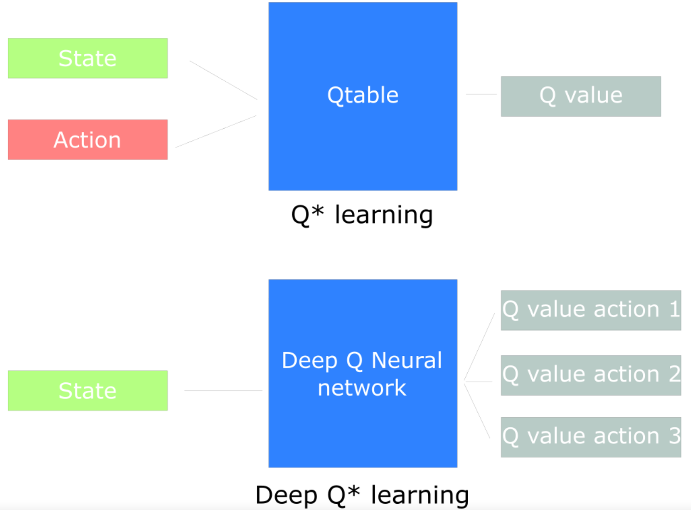
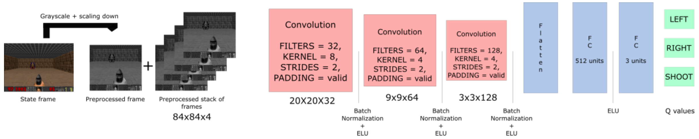
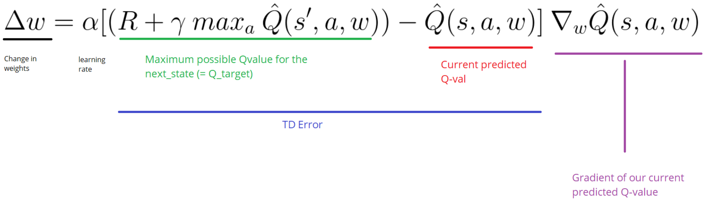

(三)强化学习之Deep q-learning
上一部分，我们学习了Q-learning，它通过 迭代更新得到Q值表，然后利用Q值表作出决策并采取行动，但是Q-learning有着十分明显的缺点:当状态空间十分庞大时，更新迭代Q值表是低效的并且 几乎变得不可行。
我们将使用深度神经网络作为估计Q值表的模型，这个神经网络接收状态作为参数，并能够返回该状态下对应的每个行动的Q值的预测值。
使用了深度神经网络改进Q-learning算法，就得到了Deep Q-learning算法，它和Q-learning算法的不同在于它不是直接去计算Q值表，而是 利用一个深层网络模型去拟合Q值表，这就类似于有监督学习中的回归模型，有了这个模型以后，我们就可以输入状态取值s，然后获得模型的输出值(该状态下所有行动对应的Q值)。
(1)例解Deep Q-learning
我们可以通过构建一个卷积神经网络来预测各个状态所对应的Q值，模型的结构如下:

1.数据预处理
通过数据预处理，我们可以降低模型输入数据的复杂度，提高模型的训练速度。- 由于颜色对于代理判断敌人所在位置基本没有作用，因此可以通过将彩色图片(RGB)转换为灰 度图片来降低输入数据的维度，使我们的输入通道数由3变成1；
- 天花板对我们的任务也没有帮助，因此可以裁剪掉图片上方的天花板；
- 通过堆叠连续的四幅图像可以使代理识别出游戏角色的移动方向，这样可以让我们的模型获得更多的信息。
2.卷积层
对于图像数据，常用的深度学习模型是卷积神经网络，它可以很好的利用图像数据的性质，识别到图像区块所带来的信息，这里，我们的模型选用三层卷 积层，并且利用Batch Normalization对数据 进行预处理，这样可以使得神经网络模型更快地收敛，激活函数选用ELU。3.全连接层
首先使用flatten层将3×3×128的图片转换成向量，然后通过两层全连接层输出为3维向量，每个维度分别对应着3个行动(左、右、开枪)的Q值。(2)模型的不足及改进
模型的训练过程中会存在一些问题:- 在学习的过程中，模型会忘记以前的经验
- 序贯的输入数据之间存在很强的相关性
这些问题会使得我们的模型不能具有很好的泛化能力，在不同的环境下(level)表现很差，或者在某些情况下无法学习到罕见情况的处理办法。
因此，我们需要对模型的训练过程进行一些改进，以使我们的模型可以更好地应对不同的场景。
游戏角色每操作一步，就会获得一个元组(当前状态，行动，回报，新的状态)，我们通过这些元组来训练模型。
- 我们可以通过建立一个经验库来解决第一个问题，我们将每次操作后得到的元组加入到我们的经验库中，这样我们就可以在训练时随机的从经验库中 选取一些元组来进行训练，这样就可以防止模型在训练过程中只记住当前训练数据的信息，而忘记了以前训练数据的信息。
- 我们可以预先对环境进行随机探索来建立经验库，并且在训练过程中时刻扩充经验库，每次训练样本都是从经验库中随机抽取出来的batch，根据batch对模型进行更新。
(3)模型的更新
Q-learning是利用Bellman方程来更新Q值表中的Q值，Deep Q-learning是通过减小Q_target(从下一个状态所能获得的最大可能回报)与Q_value(当前状态下对Q值的预测)之间的差距来更新网络的参数。
当Q_target与Q_value的差距能够一直保持比较小时，说明模型能够比较好的预测出各个行动所对应的Q值，所以Q_target与Q_value两者之间的MSE即是模型需要优化的目标。
如果采用简单的梯度下降算法，那么网络的参数变化量为:

通常情况下，我们会利用Adam下降算法去更新网络中的参数。
在整个网络更新中，我们有两个重要的步骤:
- 我们需要在预训练阶段以及训练阶段将得到的元组(当前状态，行动，回报，新的状态)扩充至我们的经验库中。
- 我们在模型训练过程中，每一步参数更新所使用的训练数据都是从经验库中选取出来的批数据，批数据并不是按照时间顺序获得的，而是从经验库中随机抽取出来的，这样的批数据就可以很好的解决模型在训练中遇到的两大影响效果的问题。